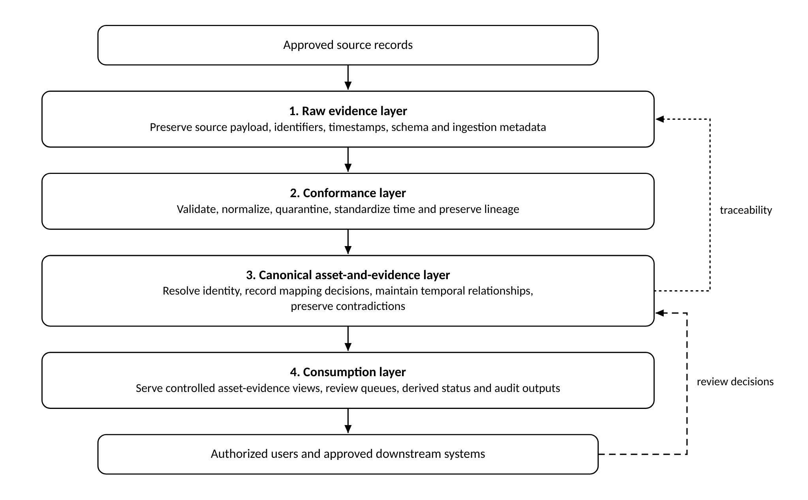

Open Grid Asset Reliability Data Framework
OGARD is a reusable methodology and executable reference implementation for reconciling electricity-network equipment records while preserving evidence, time validity and review decisions.
Read the papers Reference implementation Source on GitHub Zenodo archive
The problem
Electricity-network operators rely on multiple information systems to plan, maintain, monitor, and respond to the condition of physical assets. A maintenance system may organize work around functional locations. An asset register may focus on installed equipment, ownership, or compliance. A historian may expose only telemetry tags. Fault feeds, inspections, and technical documents introduce additional identifiers and time frames. The same physical asset can therefore have several valid but incomplete representations.
For example, a utility may replace a transformer while retaining its location number. Maintenance records and telemetry references may then describe different equipment, or different moments in its history. Three identities have to be kept apart:
- Functional location
- The role or position in the network. It can remain stable when physical equipment is replaced.
- Equipment unit
- The physical installed item. It can be replaced, removed, relocated, or associated with a serial-number history.
- Telemetry identity
- The tags or channels used to observe an asset context. They can be renamed, re-pointed, duplicated, or left stale.
OGARD preserves those records as evidence, reconciles them without erasing disagreement, and records the basis for each material decision.
Operational context
Modern electricity systems are increasingly data-intensive. The NIST Smart Grid Interoperability Framework identifies information exchange and interoperability as foundational to grid modernization, particularly as the quantity and granularity of data increase. At the same time, the North American Electric Reliability Corporation projects substantial growth in North American summer and winter peak demand over the next decade, and the U.S. Department of Energy has reported extended distribution-transformer lead times and supply constraints. These conditions increase the practical value of understanding the installed asset base.
OGARD addresses the associated engineering question: how can fragmented records about the same grid asset be reconciled and governed so that operators can inspect the evidence behind an information product?
The approach
OGARD separates raw evidence, conformance decisions, the canonical asset-and-evidence layer, and controlled consumption. Review, contradiction, and audit operate as cross-cutting controls.

- Preserve source evidence before interpretation.
- Apply deterministic rules before similarity methods.
- Route ambiguity and consequential cases to review.
- Keep operator authority explicit.
What is available
- Four technical papers, version 0.1.2: the Technical Whitepaper, Implementation Guide, Architecture and Data Model Specification, and Synthetic Benchmark Methodology and Validation Plan.
- An executable reference implementation, release 0.2.2: five synthetic transformer scenarios, six equipment-association decisions, two input layouts, a documented baseline comparison and 33 automated tests, verified with one command.
- A worked example and reference files: a synthetic transformer-replacement example, a closed contradiction taxonomy, an indicative CIM crosswalk and a scenario catalogue.
Papers, documentation and diagrams are published under CC BY 4.0 and code under the Apache License 2.0. Releases are archived on Zenodo at doi.org/10.5281/zenodo.22929401.
Current status
An initial executable demonstration has been completed on five selected synthetic scenarios. The reference implementation covers a bounded subset of the framework; broader synthetic evaluation, independent reproduction, and operator pilots remain development milestones. Workflow and reliability outcomes require operator-based evaluation.
How to cite
Bektas, D. (2026). OGARD Technical Whitepaper: Open Grid Asset Reliability Data Framework. Version 0.1.2. https://github.com/DenBek/ogard
Bektas, D. (2026). OGARD: Open Grid Asset Reliability Data Framework. Executable Reference Release 0.2.2. https://github.com/DenBek/ogard
Citations for all four papers are on the Publications page.